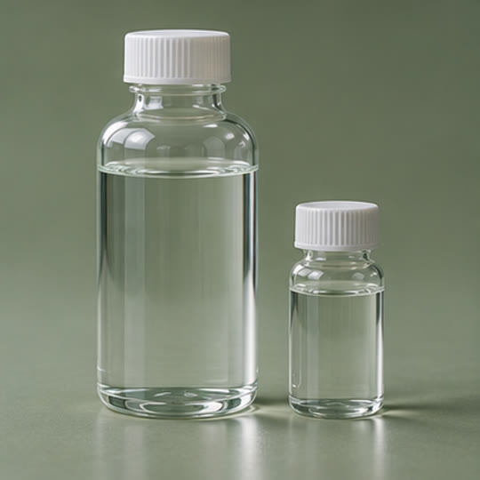

Ортоксилол
О-ксилол, также известный как 1,2-диметилбензол. Сырьё для фталевого ангидрида и органического синтеза. Применяется в составах покрытий, печатных красок, клеёв и герметиков, а также для обезжиривания.

Характеристики
- CAS
- 95-47-6
- Формула
- C₆H₄(CH₃)₂
- Класс опасности
- 3, легковоспламеняющаяся жидкость
- Фасовка
- Канистры 20 л, стальные бочки 200 л, IBC 1000 л и железнодорожные цистерны
- Перевозка
- Условия хранения и перевозки сверяют с паспортом безопасности и правилами обращения с ЛВЖ.
| Наименование показателя | Норма | Метод испытания |
|---|---|---|
| Внешний вид | Прозрачная бесцветная жидкость | Визуальный |
| Массовая доля, % | ≥ 99.5 | ГХО |
| Плотность при 20°C, г/см³ | 0.875 — 0.885 | ASTM D4052 |
| Температура кипения, °C | 143 — 145 | ASTM D1078 |
| Содержание примесей: | ||
| — м-Ксилол, % | ≤ 0.2 | ГХО |
| — п-Ксилол, % | ≤ 0.2 | ГХО |
| — Этилбензол, % | ≤ 0.1 | ГХО |
| — Неароматические, % | ≤ 0.1 | ГХО |
Документы и поставка
Подтвердите наличие, упаковку и характеристики партии по паспорту качества.
Исходная карточка Везен